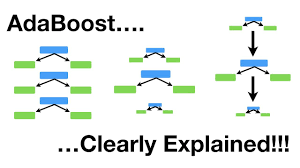

← 返回主页
📚 什么是AdaBoost？
AdaBoost（Adaptive Boosting）是1997年提出的集成学习算法。它通过串行训练多个弱分类器（通常是CART树），重点关注之前分错的样本。

🔑 核心思想
从"民主投票"进化到关注难点：
- 错分样本权重↑：如果某个样本被分错了，下一棵树会更关注它（增加权重）
- 弱树权重降低：如果某棵树预测准确率低，这棵树在最终投票中的权重也会降低
- 交叉优化：样本权重和树权重是交叉优化的过程
💡 通俗理解：就像一群人投票，但有些人更专业（权重高），而且大家会特别关注之前容易搞错的案例（样本权重高）。如果某个人总是判断错，他的话就没什么分量。
📊 与CART的对比
| 特性 |
CART |
AdaBoost |
| 树的数量 |
1棵 |
多棵（串行） |
| 样本权重 |
相等 |
动态调整 |
| 过拟合风险 |
高 |
中等 |